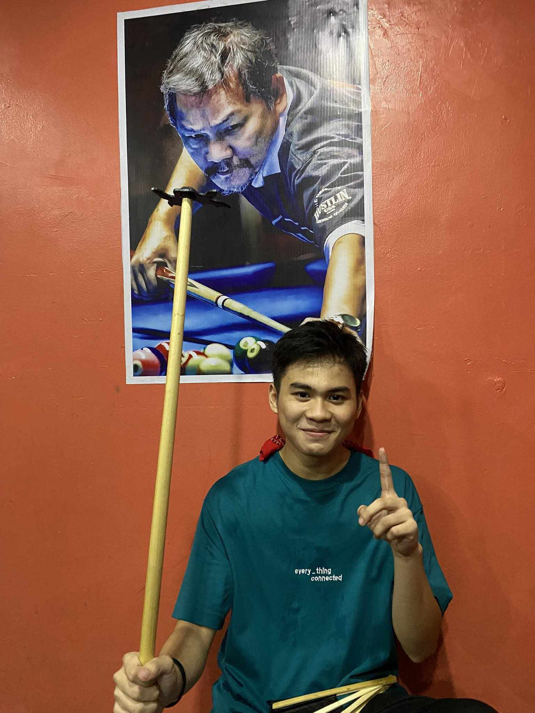
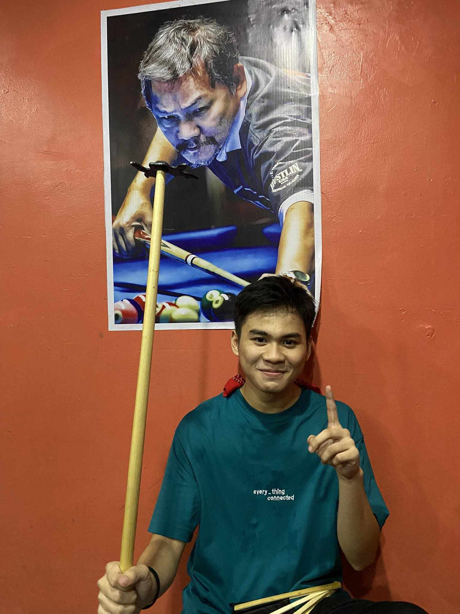
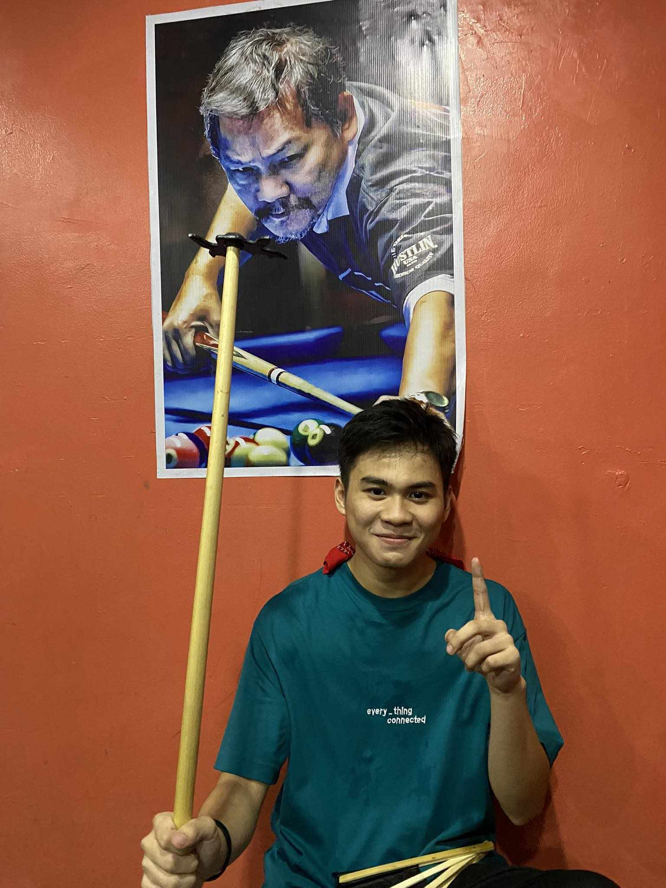
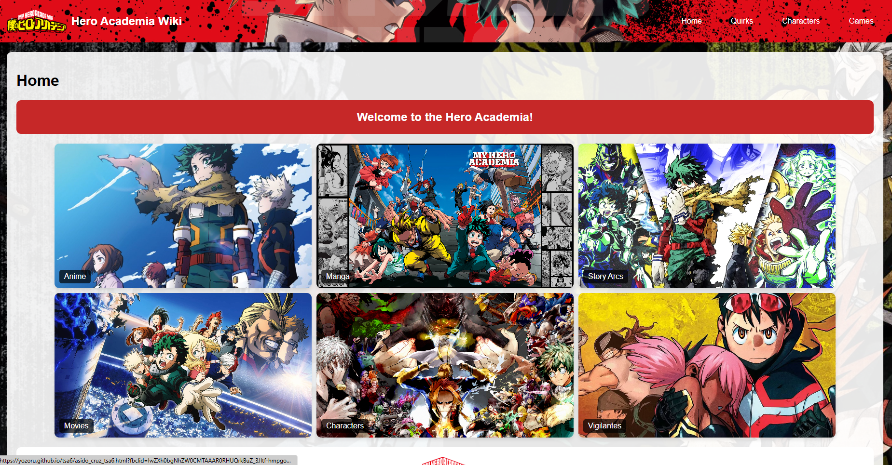

Blog
 

I'm a freshman studying at FEU Institute of Technology, pursuing a Bachelor of Science in Information Technology specialized in Cybersecurity. I am happy and strongly competitive when playing games, pushing my luck, and making a chance to discover my own dream. As technology evolves and the world keeps connected. I always hope the force around me stays connected, just like technologies can be very useful, also harmful which contains negative effects of using it. The force around me drives me to be a part of a computer course and also pushes me to seize the opportunity to transform into a better version of myself.

Some of my classmates did not know who I was at first, but now everybody calls me "Kiko", a name my mother given to me. My name is "Kiko" and I am 19 years old and a resident of Binangonan, Rizal. I play games for fun and to relieve stress, whether I am playing gacha games where every pull is a gamble or in MOBA games where I fight. Games by Riot Games make me want to play new games and get inspired to play more games. Apart from gaming, I spend a lot of my time on the basketball court or lost in the worlds of anime fantasy. I do not like mathematics or any other problem solving activities, I rather love games, and the thrill that comes with it. I may look quiet at first glance but once you interact with me, you will find that I am cheerful, full of energy and very interesting.
I have always been able to adjust to new environments and situations with ease, whether it's mastering a new game or facing unexpected challenges. This flexibility allows me to thrive in diverse settings and handle changes with a positive attitude.
I am attuned to the feelings and needs of others, making it easy for me to connect and build strong relationships. This sensitivity helps me support friends and family, providing understanding and compassion when they need it most.
In this activity, we were tasked with creating an HTML file that utilizes form and table elements. For the first Pokémon, we were instructed to use a personal picture and specify a type. Then, we needed to choose nine additional Pokémon and display their data accordingly.
See MoreIn this activity, we were tasked to create an announcement using HTML and CSS codes, similar to the format posted by the FEU Tech Facebook account. The announcement needed to have a background image, which could either be contained or cover based on our needs.
See MoreFor this task, we create six Pokemon cards using HTML and CSS. The cards were structured within a container, with each row displaying three cards. Each Pokemon card included a brief description of the Pokémon, and at the bottom, there were two buttons styled with a hover.
See MoreWe construct a custom-designed webpage using CSS Grid and Flexbox. We chose characters from anime or video games to showcase our work. Some of these characters were displayed horizontally, while others were shown in portrait mode. Each character was accompanied with descriptive text.
See MoreWe completed this task as a pair, utilizing one of the provided templates to craft a homepage dedicated to our favorite game, anime, TV show, or movie. Our webpage featured images and real text, designed responsively with at least two breakpoints of our preference.
 See MoreWe use HTML, CSS, and JavaScript to develop a Flexbox simulator for our final activity. This activity proved to be one of the most difficult but satisfying aspects of our program. I invested a significant amount of time and effort making sure everything was working properly.
See More